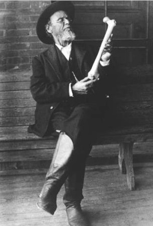

Osteopathie

" ... mit Händen, die denken, fühlen, sehen, wissen..."
(W.G. Sutherland)
Die Osteopathie wurde von über hundert Jahren vom Amerikanischen Arzt und Chirurgen Andrew Taylor Still (1826-1917) entwickelt.
Der Körper ist eine Einheit. Der Mensch ist eine Einheit von Körper, Seele und Geist.
Der Körper ist imstande, sich selbst zu regulieren, zu heilen und gesund zu erhalten.
Die Struktur und Funktion beeinflussen einander wechselseitig.
Die osteopathische Behandlung berücksichtig gleichermaßen die Einheit des Körpers sowie die Selbstheilungskräfte und die Wechselwirkungen zwischen Strukturen und Funktionen.
Die Grundlagen des osteopathischen Denkens und Handelns basieren auf intensiven funktionellen Anatomie- und Physiologiestudien. Die Osteopathie ist eine rein manuelle Medizin. Bei der osteopathischen Behandlung werden Verspannungen und Blockierungen mit den Händen ertastet und auf die gleiche Weise manuell gelöst. Die Untersuchung und Behandlung findet nach der osteopathische Lehre in 3 Hauptbereichen statt:
Die Osteopathie wurde von über hundert Jahren vom Amerikanischen Arzt und Chirurgen Andrew Taylor Still (1826-1917) entwickelt.
Der Körper ist eine Einheit. Der Mensch ist eine Einheit von Körper, Seele und Geist.
Der Körper ist imstande, sich selbst zu regulieren, zu heilen und gesund zu erhalten.
Die Struktur und Funktion beeinflussen einander wechselseitig.
Die osteopathische Behandlung berücksichtig gleichermaßen die Einheit des Körpers sowie die Selbstheilungskräfte und die Wechselwirkungen zwischen Strukturen und Funktionen.
Die Grundlagen des osteopathischen Denkens und Handelns basieren auf intensiven funktionellen Anatomie- und Physiologiestudien. Die Osteopathie ist eine rein manuelle Medizin. Bei der osteopathischen Behandlung werden Verspannungen und Blockierungen mit den Händen ertastet und auf die gleiche Weise manuell gelöst. Die Untersuchung und Behandlung findet nach der osteopathische Lehre in 3 Hauptbereichen statt:
Cranio-Sacrale Osteopathie
Die Beweglichkeit der einzelnen
Schädelknochen, Kreuzbein, Nervensystem, Hirn- und Rückenmarkthaut und Hirn- und
Rückenmarkksflüssigkeit.
Mit den angewendeten Techniken kann die Beweglichkeit des Schädelknochens und des Kreuzbeins erlangt
werden, kann eine Spannung der Hirnhaut ausgeglichen werden und eine Zirkulation der Hirnflüssigkeit
verbessert werden. zB.: Kopfschmerzen, Migräne, Schwindel, Kiefergelenkbeschwerden,
Gleichgewichtsstörung, u.a.
Zu Beginn einer osteopathischen Behandlung steht ein ausführliches Gespräch über die individuellen
Beschwerden, die medizinischen Vorgeschichten und die Lebensweise. In der anschliessenden
körperlichen Untersuchung wird systematisch nach störenden Bewegungseischränkungen,
Schmerzauslösungsstruktur gesucht. Mit Fingerspitzengefühl und exakten Wissen physiologischer und
anatomischer Zusammenhänge setze ich im Anschluss gezielte Impulse mit spezifischen manuellen
Techniken zur bestmöglichen Wiederherstellung des individuellen Gleichgewichtes im Körper.
Osteopathie ist ein ganzheitliches Heilen.
Parietale Osteopathie
Die Gelenke, Muskeln, Faszien und
Sehnen.
Die angewandeten Techniken wirken direkt auf die Strukturen des Bewegungsapparates. zB.:
Rückenschmerzen, Nackenbeschwerden, Ischialgie, Gelenkprobleme,u.a.
Viszerale Osteopathie
Die inneren Organe, die Blut- und
Lymphgefässe und die Nervenbahnen im Bauch- und Brustraum.
Das Ziel der angewendeten Techniken ist das gute Funktionieren der Organe durch die
Wiederherstellung von Druck, Spannung, Kraft und die freie Bewglichkeit jedes einzelnen Organs. zB.:
Verdauungsstörungen, Sodbrennen, Reflux, Atembeschwerden, Menstruationsbeschwerden, u.a.